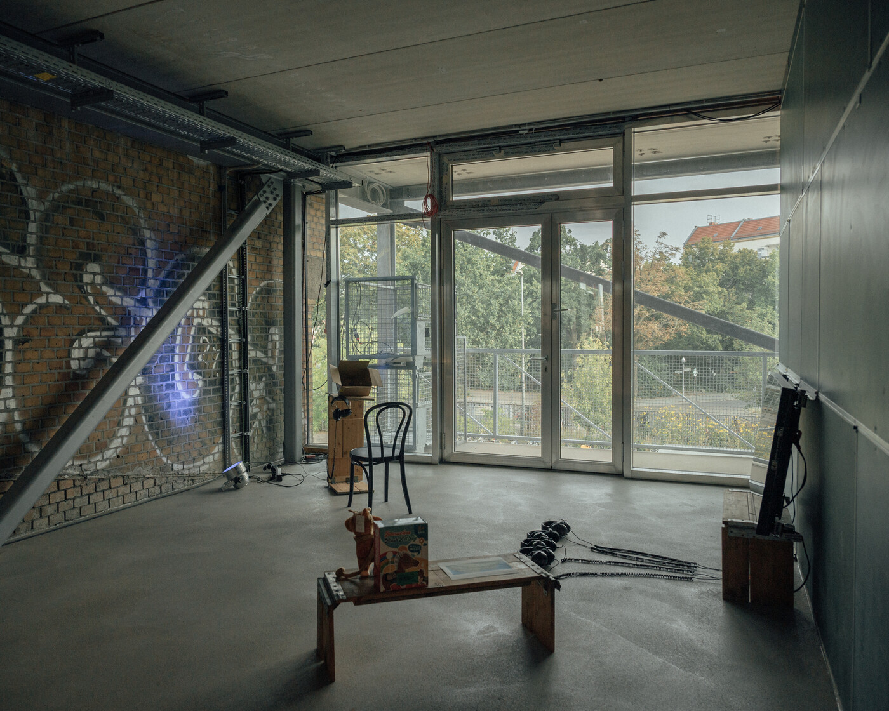
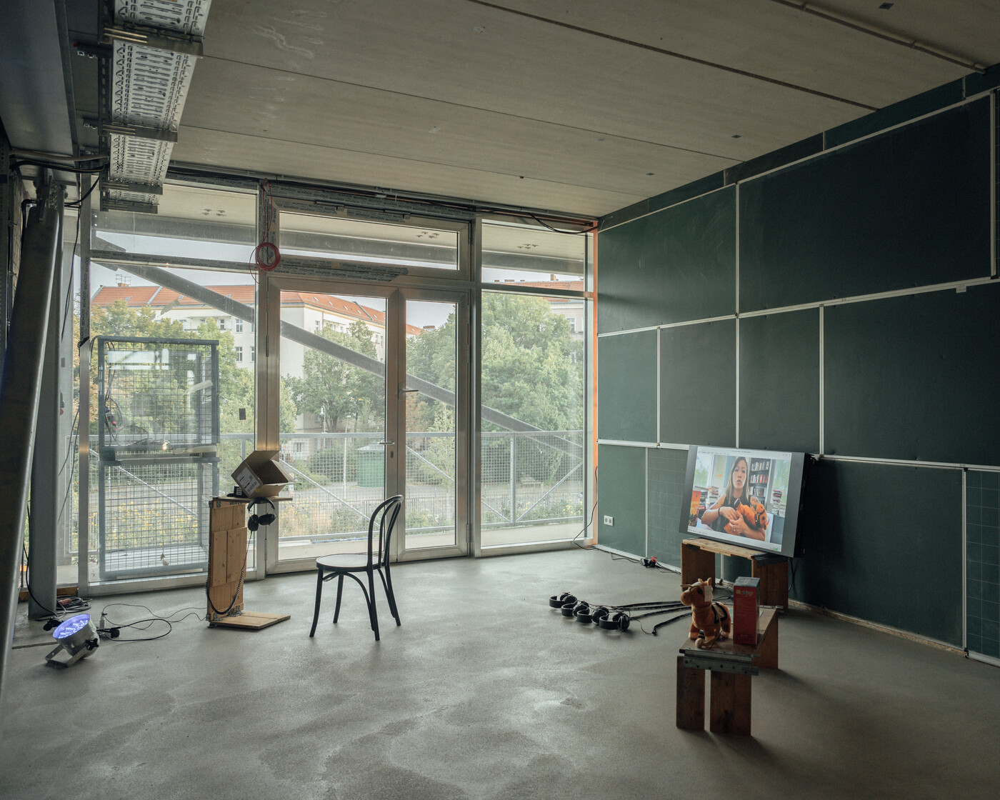
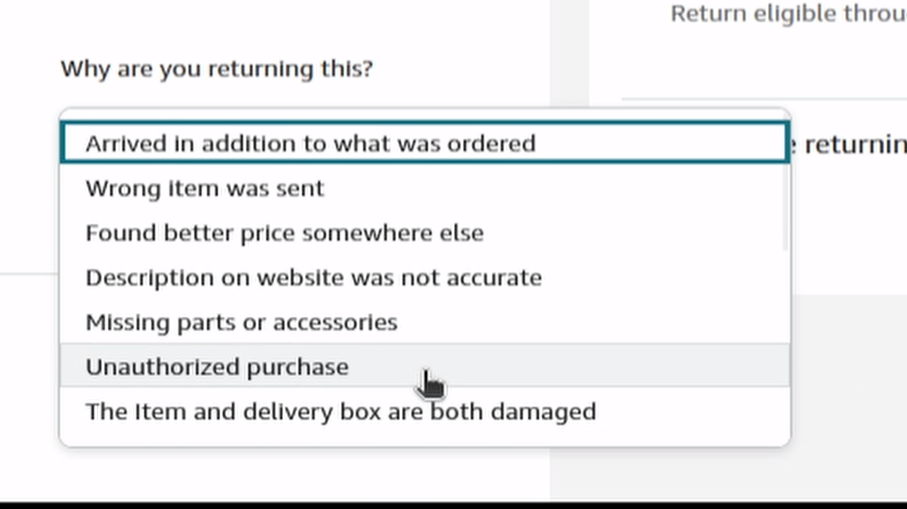
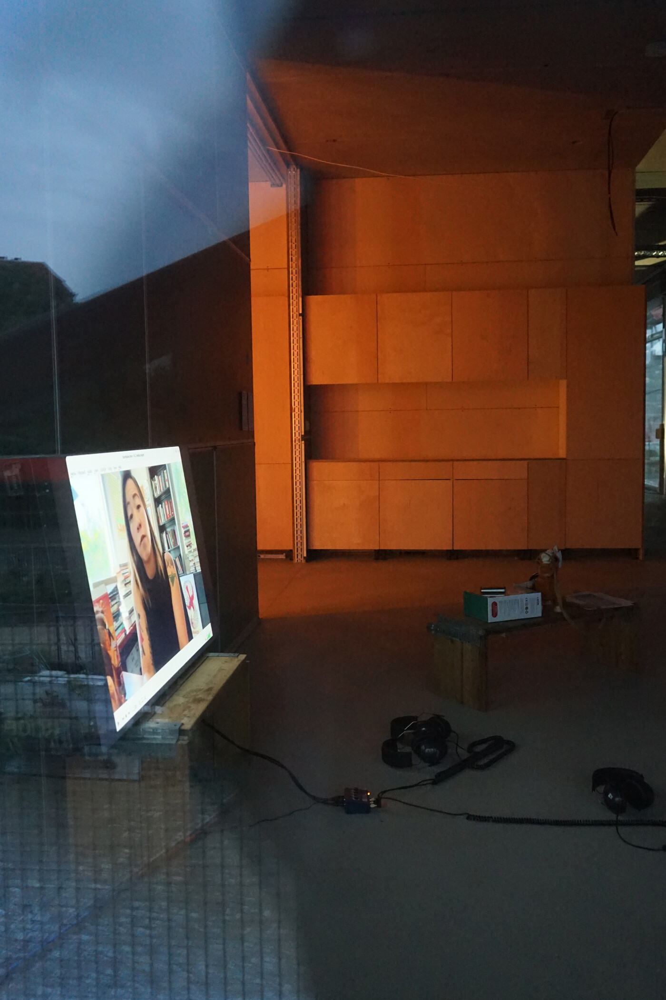
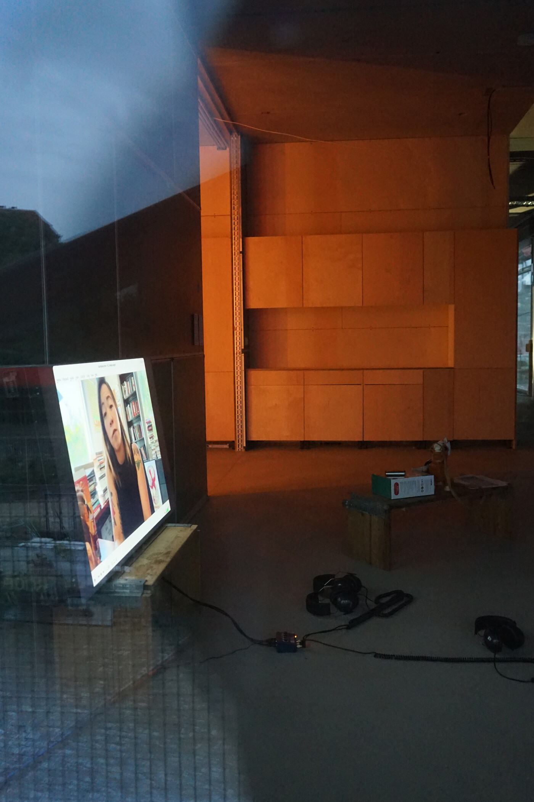
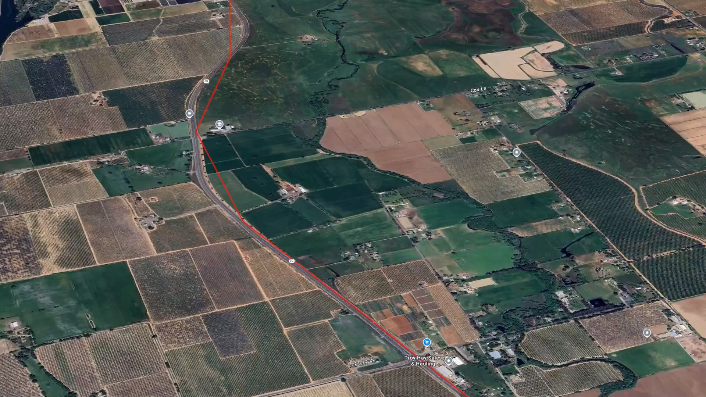
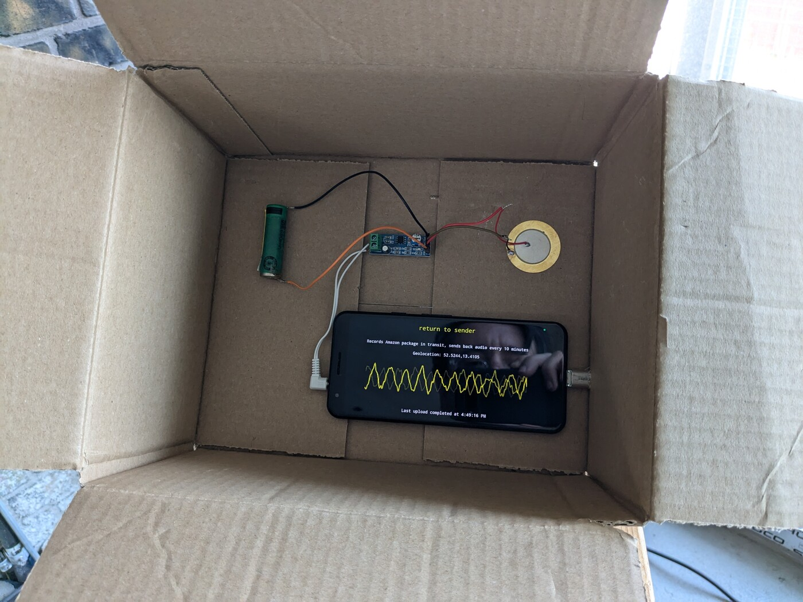

Return to Sender
"Return to Sender" is a political art project exposing the hidden logistics networks behind Amazon’s returns process. By tracing returned GPS-tracked packages, the project highlights the labor exploitation and environmental costs involved in corporate logistics. Participants across the U.S. are invited to return GPS devices to Amazon, mapping their journey through warehouses, repair centers, and disposal sites. This act challenges the opacity of corporate systems while fostering new solidarities between consumers and workers.
{kind=link}
Participants are encouraged to include personal letters of care and solidarity addressed to warehouse workers within their return packages. This small yet poignant gesture disrupts the anonymity of the returns process, reminding us of the human element in an often-invisible system. The project aims to inspire broader awareness of systemic labor and environmental injustices while advocating for structural changes, including regional unionization and the nationalization of logistics corporations like Amazon.
 {kind=link}
{kind=link}
Exhibition at ZK/U
"Return to Sender" was showcased during Berlin Art Week 2024 at ZK/U’s "No Departures without Arrivals" exhibition. The installation featured mapped GPS routes, audio recordings, and visual documentation, immersing visitors in the complexities of corporate logistics and the environmental impact of consumer habits.
 

{kind=link}
The "Supply Chain Manifest" tool visualized the journey of returned packages, emphasizing the overlooked costs of consumer convenience. By combining creative interventions with hard data, "Return to Sender" encourages audiences to reconsider their role within global supply chains.
{kind=link}
Amazon Return with a Recording Device Inside
A solo work within "Return to Sender" involves returning a modified smartphone to Amazon.de. The device recorded 52 hours of transit audio and transmitted it over the cell network, offering a rare sonic glimpse into the hidden logistics process. The resulting data and insights were exhibited as part of Berlin Art Week in 2024. View the work here.
{kind=link}